Gradient descent, and the models it fits
Lecture 4 Géron Ch. 4
How a model is fitted, when there is no formula for the answer
Applications of Machine Learning
BSc Mathematics of Artificial Intelligence · Third year
Worked example: the Titanic passenger manifest
Both lectures called .fit() and moved on.
Today we open it.
| Situation | What the normal equation does |
|---|---|
| Many features | inverts an $(n{+}1)\times(n{+}1)$ matrix — cost grows like $n^{3}$ |
| Many instances | forms $\mathbf{X}^{\intercal}\mathbf{X}$, so every row must be seen at once |
| Rank-deficient design | the inverse does not exist |
| A cost that is not squared error | there is no closed form at all |
The last row is the one that matters. The classifier we build today minimises a cost whose stationary equations have no solution in elementary functions — so the answer has to be walked to.
| min | What |
|---|---|
| 0–10 | where we are, and why a formula is not always available |
| 10–30 | the mathematics — gradient descent, derived |
| 30–70 | the method — linear regression by descent, polynomial features, logistic regression on the Titanic manifest |
| 70–85 | softmax regression, decision boundaries, which solver to use |
| 85–90 | the notebook |
One dataset runs through the second half: 891 passengers, and the question how likely is this person to survive — a probability, not a label.
examinable The derivation in full, and logistic and softmax regression: the model, the log-loss, coefficients as log-odds, and the two conditions under which the fit is not well defined. not examinable Which solver is fastest, wall-clock timings, and the Titanic feature engineering.
The mathematics
Géron §4.2 — the algorithm that fits almost every model in the second half of this course
20 minutes · examinable
You have a cost $J(\boldsymbol\theta)$ and no formula for its minimiser.
How do you find one, and how do you know you have?
We derive on squared error because it is the cost we already know the answer for — which makes it the one cost where the method can be checked against a formula.
$J$ maps each of the $n{+}1$ parameters to one number. Fitting is finding the lowest point of that surface.
Everything difficult is inside which way is downhill and how big a step. Those are the next two steps.
Move a small distance in a unit direction $\mathbf{u}$. To first order,
By Cauchy–Schwarz, $\lvert \nabla J\cdot\mathbf{u}\rvert \le \lVert \nabla J\rVert$ for every unit $\mathbf{u}$, with equality only when $\mathbf{u} \parallel \nabla J$:
This is why the gradient and not some other vector: it is the unique direction of steepest decrease, and the argument is three lines long.
Chain rule on the square, then $\partial(\boldsymbol\theta^{\intercal}\mathbf{x})/\partial\theta_j = x_j$ because the sum $\sum_k \theta_k x_k$ contains $\theta_j$ exactly once.
Read it as: error × feature, averaged over the instances.
The gradient of the mean squared error
The $j$-th entry of $\mathbf{X}^{\intercal}\mathbf{r}$ is $\sum_i r_i x_j^{(i)}$, which is exactly the sum in step 3 with $\mathbf{r} = \mathbf{X}\boldsymbol\theta - y$ the residual vector.
One matrix product over the whole training set. Cost per evaluation: $O(mn)$ — linear in the rows, where the normal equation was cubic in the columns.
Batch gradient descent
Batch, because every step uses the whole training set. Three lines of NumPy, and no matrix is ever inverted.
$\eta$ has units: it converts a gradient into a displacement in parameter space. That is why its right value depends on how the features are scaled — step 8.
The iteration stops moving exactly when the step is zero:
That is the normal equation of Lecture 2.
Descent does not solve a different problem. It solves the same system, without ever forming $(\mathbf{X}^{\intercal}\mathbf{X})^{-1}$ — which is why it survives the rank-deficient case that the closed form cannot even state.
The Hessian of the MSE is constant:
Positive semi-definite everywhere, so $J$ is convex: it has no local minima, no plateaux other than the minimum itself, and no saddle points.
On a convex cost, a stationary point is a global minimum. Descent cannot get stuck — it can only be slow.
Hold on to the word convex. The moment we leave linear models, in Lecture 9, every one of those guarantees goes.
Write $H = \nabla^2 J$ and subtract the fixed point from the update:
In the eigenbasis of $H$ each coordinate of the error is multiplied by $(1 - \eta\lambda_i)$ every step, so the error decays for all of them if and only if
Because $J$ is quadratic the argument is exact, not a local approximation.
| Learning rate | Factor per step | What you see |
|---|---|---|
| $\eta$ far below $2/\lambda_{\max}$ | $1-\eta\lambda_i$ just under 1 | the cost falls, slowly, and is still falling when you stop |
| $\eta \approx 1/\lambda_{\max}$ | small | the cost drops fast and flattens |
| $\eta > 2/\lambda_{\max}$ | $\lvert 1-\eta\lambda_i\rvert > 1$ | the cost rises, oscillates, and overflows to nan |
inf
and a model that predicts one value everywhere. Plot the cost
against the step number; it is the only cheap way to see which of
the three rows you are in.
The step count is governed by the slowest mode. With the best fixed $\eta$, the error contracts per step by a factor
Standardising the columns is not cosmetic. It changes $\kappa$, and $\kappa$ is what sets the number of steps.
Each batch step costs $O(mn)$, which for large $m$ is unaffordable. Draw an index $i$ uniformly at random and use only that row:
Take the expectation over the draw:
The one-instance gradient is an unbiased estimate of the batch gradient.
The estimate's variance does not shrink as $\boldsymbol\theta$ approaches $\hat{\boldsymbol\theta}$: at the minimum the batch gradient is zero and the individual gradients are not. So the iterates bounce around the minimum forever, and the remedy is to shrink the step — a learning schedule $\eta_k \to 0$. Averaging over $b$ rows instead of 1 is still unbiased, by the same one-line argument, and divides the variance by $b$.
| Variant | Rows per step | Cost per step | Path |
|---|---|---|---|
| Batch | $m$ | $O(mn)$ | smooth, straight to the minimum |
| Mini-batch | $b$ | $O(bn)$ | slightly noisy, and vectorises on hardware |
| Stochastic | 1 | $O(n)$ | very noisy, never settles without a schedule |
The bouncing is not only a cost. On a non-convex surface — every network from Lecture 9 onwards — it is what lets the iterate leave a bad local minimum. Here, on a convex bowl, it is pure nuisance.
| The result | What it lets you do today |
|---|---|
| $\nabla J = \frac{2}{m}\mathbf{X}^{\intercal}(\mathbf{X}\boldsymbol\theta - y)$ | fit a linear model without inverting anything |
| Convexity | trust the answer whatever the starting point — and know that this stops being true in Lecture 9 |
| $\eta < 2/\lambda_{\max}$ | read a rising cost curve as a step-size fault, not a bug |
| Contraction $(\kappa-1)/(\kappa+1)$ | know that scaling is part of the algorithm, not tidiness |
| Unbiasedness of $\mathbf{g}^{(i)}$ | use mini-batches on data that does not fit in memory |
And one more: the derivation never used the fact that the cost was squared error until step 3. Swap the cost, redo step 3, and everything else stands. That is what we do in twenty minutes.
The method
40 minutes · examinable
| Normal equation / SVD | Gradient descent | |
|---|---|---|
| Cost in $m$ | linear | linear, per step |
| Cost in $n$ | $n^{2.4}$ to $n^{3}$ | linear |
| Out-of-core | no — needs all rows | yes, with mini-batches |
| Scaling required | no | yes |
| Hyperparameters | none | $\eta$, batch size, schedule, stopping rule |
| Other costs | squared error only | any differentiable cost |
When to prefer each. Few features and data that fits in memory: use the closed form, it has no knobs to get wrong. Many features, streaming data, or any cost that is not squared error: descent.
theta = rng.standard_normal((n + 1, 1)) # start anywhere
for step in range(n_steps):
grad = 2 / m * X_b.T @ (X_b @ theta - y) # the gradient of step 4
theta = theta - eta * grad # the update of step 5
Two lines. No inverse, no decomposition, no solver. In
practice you call SGDRegressor, which is this loop plus a
schedule, a stopping rule and a penalty — inside a pipeline, so the
scaler is fitted per fold:
make_pipeline(StandardScaler(), SGDRegressor(eta0=0.01)).
A straight line cannot fit a curve. Add the powers as columns:
Everything derived above still applies unchanged — the gradient, the convexity, the convergence condition — because all of them were statements about $\boldsymbol\theta$.
PolynomialFeatures(degree=d) also generates every
cross product, which is how a linear model represents an interaction
such as “third class and travelling alone”. The count is
$\binom{n+d}{d}$ — the number of monomials of degree at most $d$ —
so “a bit more capacity” is never a small change.
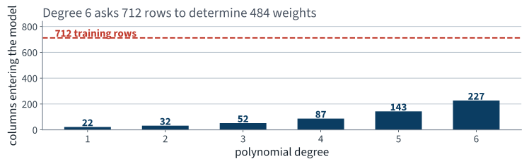
Degree 6 on four numeric columns gives the model 227 weights to determine from 712 passengers — about three rows per weight.
The worked example
891 passengers, and a question that rules out most of the models in this book
| What they asked for | What that forces |
|---|---|
| “how likely” | a probability, not a label |
| the number is used to allocate | it must be calibrated |
| “explain the assignment” | weights a human can read |
“This passenger survives” is not checkable on its own. “This passenger survives with probability 0.31” is: take everyone the model puts near 0.31 and count. That is why requirement 1 is not a formatting preference.
def load_titanic():
tarball = Path("datasets/titanic.tgz")
if not tarball.is_file():
Path("datasets").mkdir(parents=True, exist_ok=True)
url = "https://github.com/ageron/data/raw/main/titanic.tgz"
urllib.request.urlretrieve(url, tarball)
with tarfile.open(tarball) as t:
t.extractall(path="datasets", filter="data")
return pd.read_csv("datasets/titanic/train.csv")
891 passengers, 12 columns — the whole labelled corpus.
The archive also holds test.csv, which has no
Survived column: it is a competition submission file,
and it is useless for measuring anything. We hold out our own test set.
| Column | Meaning | Column | Meaning |
|---|---|---|---|
Survived | the label, 0 or 1 | Parch | parents and children aboard |
Pclass | ticket class, 1–3 | Ticket | ticket number, free text |
Name | full name, free text | Fare | fare paid |
Sex | male or female | Cabin | cabin number, mostly absent |
Age | years, sometimes absent | Embarked | port of embarkation |
SibSp | siblings and spouses aboard | PassengerId | a row number |
PassengerId is an index dressed as a
feature. Give it to a model and the model will find something in it.
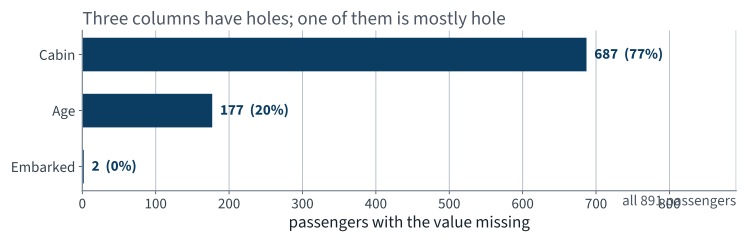
Cabin is missing for 77% of the passengers. That is not a column with gaps; it is a gap with a column.
Cabin, 687 missing — do not impute it. Take the deck
letter where there is one and give the rest their own level
U: the missingness is the informationAge, 177 missing — impute the median inside the
pipeline, so it is recomputed on every training foldEmbarked, 2 missing — impute the most frequent port.
Two rows out of 891 cannot matter, and you should still be able to say
what you didDeck = "U" will largely mean third
class, because the cabin number was recorded for the passengers whose
tickets carried one. So the column is partly a proxy for
Pclass. Write that down.
| Outcome | Passengers | Share |
|---|---|---|
| Did not survive | 549 | 61.6% |
| Survived | 342 | 38.4% |
Mildly imbalanced — nothing like the rare-event problem of the previous lecture, where the positive class was one row in ten. Accuracy will not be absurd here.
It will be something more dangerous than absurd: plausible.
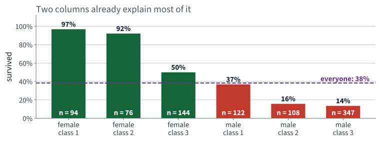
A first-class woman and a third-class man differ by a factor of seven. Any model that cannot beat this table is not earning its keep.
Name is not a useless string
Braund, Mr. Owen Harris
Cumings, Mrs. John Bradley (Florence Briggs Thayer)
Heikkinen, Miss. Laina
Every name carries a title, and the title carries sex,
marital status and — for Master — being a boy.
| Title | Passengers | Survived |
|---|---|---|
Mrs | 126 | 79.4% |
Miss | 185 | 70.3% |
Master — a boy | 40 | 57.5% |
Rare — Dr, Rev, Col, … | 23 | 34.8% |
Mr | 517 | 15.7% |
Master is the only level that is not a
re-encoding of Sex: those 40 boys survived at nearly four times
the rate of the men.
d["FamilySize"] = d["SibSp"] + d["Parch"] + 1
d["IsAlone"] = (d["FamilySize"] == 1).astype(int)
d["Deck"] = d["Cabin"].str[0].fillna("U")
# Title, extracted from Name as above
| Column | The claim it encodes |
|---|---|
Title | a boy is not a man |
FamilySize | a group evacuates together, and slowly |
IsAlone | nobody is waiting for you |
Deck | distance to a boat, and a proxy for class |
The first line is an exact linear function of two columns we already have. Remember it — we come back to it with a rank computation, not with an opinion.
X_train, X_test, y_train, y_test = train_test_split(
X, y, test_size=0.2, random_state=42, stratify=y)
assert len(X_train) == 712 and len(X_test) == 179
print(f"train rate {y_train.mean():.4f} test rate {y_test.mean():.4f}")
# train rate 0.3834 test rate 0.3855
Stratified on the label this time, not on a predictor: with 179 test rows an unstratified draw can shift the base rate by several points, and every downstream number moves with it.
712 training passengers. That is a small dataset, and by the end of the lecture the size is doing visible damage.
p = y_train.mean() # 0.3834
majority_accuracy = 1 - p # 0.617
constant_log_loss = -(p*np.log(p) + (1-p)*np.log(1-p))
0.666
The log loss of a model that has learned nothing except the base rate. It is the entropy of the label, in nats, and every number below it has to be compared against it.
Take the linear model of Lecture 2 and pass it through one function.
$\boldsymbol\theta^{\intercal}\mathbf{x}$ is exactly the quantity least squares fitted. Everything new is in $\sigma$ and in what we ask $\boldsymbol\theta$ to minimise.
$\sigma$ is strictly increasing and maps $\mathbb{R}$ onto $(0,1)$ — so it never returns exactly 0 or exactly 1, which matters when the loss takes a logarithm of it.
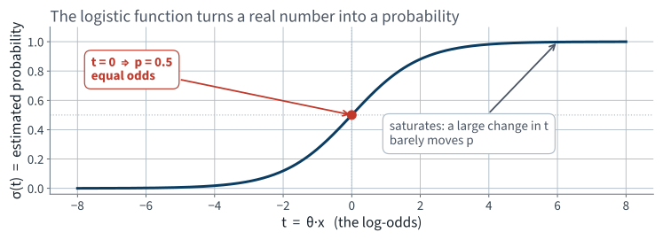
Monotone, so the ranking is the linear model's ranking. Saturating, so beyond about $\lvert t\rvert = 5$ more evidence changes almost nothing.
Invert $\sigma$:
The linear model does not predict the probability. It predicts the log-odds, and the coefficients act on the odds.
Add 1 to $x_j$ and the odds are multiplied by $e^{\theta_j}$, wherever you started. The probability has no such rule — which is the sentence most often got wrong in the examination.
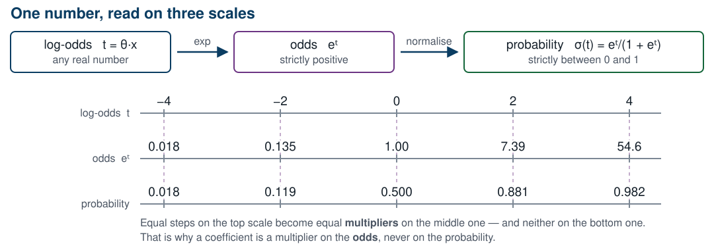
Equal steps in log-odds are equal multipliers in odds, and neither in probability.
The log loss, in nats
A scoring rule is proper if the expected score is optimised by reporting your true belief.
Error times feature. The same shape as the gradient of the MSE.
Setting that gradient to zero gives $\mathbf{X}^{\intercal}\bigl(\sigma(\mathbf{X}\boldsymbol\theta) - y\bigr) = \mathbf{0}$, in which $\boldsymbol\theta$ appears inside a transcendental function. There is no rearrangement that isolates it.
This is the first model in the course that has no formula for its own answer. Everything in the first half of today is what makes it fittable anyway.
NUM = ["Age", "Fare", "FamilySize", "SibSp", "Parch"]
CAT = ["Pclass", "Sex", "Embarked", "Title", "Deck"]
BIN = ["IsAlone"]
prep = ColumnTransformer([
("num", make_pipeline(SimpleImputer(strategy="median"),
StandardScaler()), NUM),
("cat", make_pipeline(SimpleImputer(strategy="most_frequent"),
OneHotEncoder(handle_unknown="ignore")), CAT),
("bin", "passthrough", BIN),
])
Standardising is step 9 of the derivation, applied: the solver is doing descent, and $\kappa$ decides how long it takes. Everything is inside the pipeline, so nothing is fitted on a held-out fold.
clf = LogisticRegression(C=1e6, max_iter=4000) # C=1e6 turns the penalty OFF
model = Pipeline([("prep", prep), ("clf", clf)])
cv = StratifiedKFold(n_splits=10, shuffle=True, random_state=42)
scores = cross_validate(model, X_train, y_train, cv=cv,
scoring=["neg_log_loss", "accuracy", "neg_brier_score"],
return_train_score=True)
StratifiedKFold, not KFold: with
71 passengers per fold, an unstratified split can hand a fold a base rate
several points from the truth.
Scikit-learn regularises logistic regression
by default — C=1.0. We switch it off so
that today's coefficients are the data's and not a compromise with a penalty.
Turning it back on is the next lecture.
| Model | Log loss | Accuracy |
|---|---|---|
| Report the base rate to everyone | 0.666 | 61.7% |
| Logistic regression, 10-fold cross-validated | 0.496 | 81.5% |
About a quarter below the anchor on log loss, and twenty points of accuracy above the majority class.
Cross-validated, not training. And the per-fold spread of the log loss is 0.22 — larger than every difference we are about to compare. Carry that number; it is why the next two slides ask a question other than which is better.
names = model[:-1].get_feature_names_out()
coefs = model[-1].coef_[0]
for n, c in sorted(zip(names, coefs), key=lambda t: -abs(t[1]))[:6]:
print(f"{n.split('__')[-1]:16s} {c:+.3f} odds x{np.exp(c):.3f}")
Deck_T -5.678 odds x0.003
Title_Master +3.484 odds x32.596
Sex_female +3.308 odds x27.325
Sex_male -2.833 odds x0.059
Title_Miss -2.806 odds x0.060
Title_Mrs -2.020 odds x0.133
Title_Miss at −2.81 — but 70.3% of them survived, against 38.4% overallTitle_Mrs at −2.02 — the highest-surviving group in the dataDeck_T is the largest weight in the model — and there is exactly one passenger on deck TThese are not weak effects or noisy estimates. They have the wrong sign, and the model's predictions are nonetheless good.
Before reaching for a story about confounding, ask the cheaper question: what is the shape of the design matrix?
Z = model[:-1].transform(X_train)
Z_b = np.c_[np.ones(len(Z)), Z] # add the intercept column
print("columns:", Z_b.shape[1]) # 29
print("rank: ", np.linalg.matrix_rank(Z_b)) # 23
print("cond: ", np.linalg.cond(Z_b)) # 2.6e+16
Six columns of the design matrix are linear combinations of the others.
Five from the encoder. Each one-hot block sums to 1 in every row — and the intercept column is also 1 in every row. Five categorical columns, five exact dependencies.
One from us.
FamilySize = SibSp + Parch + 1, exactly,
for every passenger.
resid = (X_train["SibSp"] + X_train["Parch"] + 1
- X_train["FamilySize"]).abs().max()
print(resid) # 0.0
Not “highly correlated” — an identity. Standardising does not help: an affine map of a linear dependence is still a linear dependence.
Recall from Lecture 2 that $\mathbf{X}^{\intercal}\mathbf{X}$ is invertible exactly when $\mathbf{X}$ has full column rank. Logistic regression has no normal equation, but the same condition governs it: along $\mathbf{v}$ the loss is flat.
Add 2.5 to Sex_female and to
Sex_male, subtract 2.5 from the intercept. Nothing else.
v = np.zeros_like(theta)
v[names.index("Sex_female")] = 1.0
v[names.index("Sex_male")] = 1.0
logit_a = Z @ theta + b0
logit_b = Z @ (theta + 2.5*v) + (b0 - 2.5)
print(np.abs(logit_a - logit_b).max()) # 1.8e-15
Sex_male can be −2.83 or −0.33. Both
fits make the same prediction for all 712 passengers.
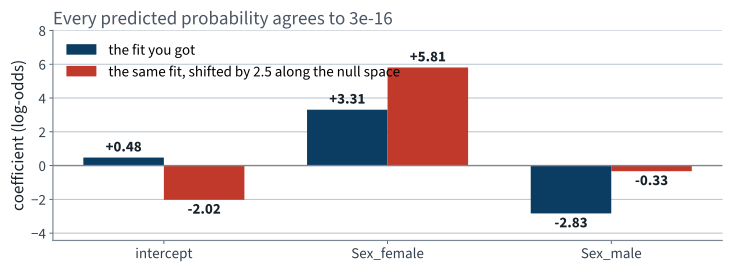
If a coefficient can be moved without changing any prediction, that coefficient is not a property of the data.
NUM = ["Age", "Fare", "SibSp", "Parch"] # FamilySize removed
("cat", make_pipeline(SimpleImputer(strategy="most_frequent"),
OneHotEncoder(drop="first", min_frequency=2,
handle_unknown="infrequent_if_exist")), CAT),
| Design matrix | Columns | Rank | Condition number |
|---|---|---|---|
| As first written | 29 | 23 | 2.6e+16 |
| One level dropped, FamilySize removed | 23 | 23 | 83.6 |
Fourteen orders of magnitude. IsAlone stays: it
is an indicator, not a linear function of the counts.
drop="first" costs youEach dropped level becomes the reference, folded into the intercept. Every remaining coefficient is read relative to it.
| Column | Reference level | Column | Reference level |
|---|---|---|---|
Pclass | 1st class | Title | Master |
Sex | female | Deck | A |
Embarked | Cherbourg |
A coefficient quoted with no stated reference level cannot be read by anybody, including you in a month. This is the most common defect in the regression tables you will be asked to review.
And min_frequency rather than
handle_unknown="ignore": with drop="first", an
ignored unknown level is encoded all-zeros, which is the encoding of the
reference level — so our one deck-T passenger would be scored
as though they were on deck A whenever a fold holds them out.
| Encoding | Cross-validated log loss |
|---|---|
| All levels, FamilySize kept — rank 23 of 29 | 0.496 |
| One level dropped, FamilySize removed — full rank | 0.468 |
Not a large move, and not the point. The point is that the first row was produced by a fit that had no unique answer, and nothing said so.
The fold spread of the repaired model is 0.13, and of the rank-deficient one 0.22 — both far wider than this gap. Do not claim the second encoding is better on this evidence; claim it is defined.
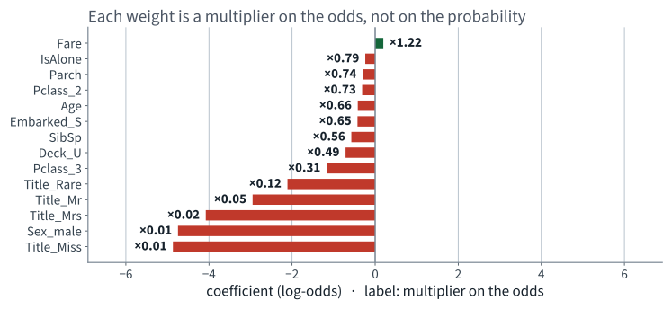
Each bar is a log-odds. The label beside it is what the odds get multiplied by.
Pclass_3 = −1.169
“Holding every other recorded feature fixed, travelling third class
multiplies the odds of survival by $e^{-1.169} = 0.31$, relative to
first class.”
Unique is not the same as stable:
Sex and Title still carry much of the same
information, so how the effect is split between them moves with the sample.
We only fixed uniqueness.
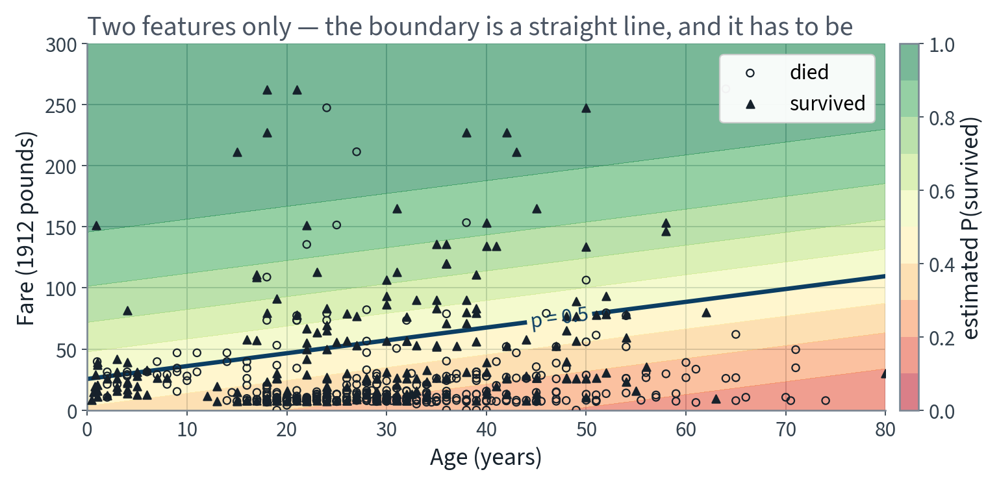
Every contour is straight: the log-odds are linear. The sigmoid bends the colours, never the lines.
“Children and the elderly were helped first” is not a monotone
statement about age. A linear term in Age cannot say it.
Applied to the four numeric columns only: squaring a one-hot indicator returns the indicator, and we have just spent ten minutes removing exact copies.
| Degree | Columns | Training log loss | Held-out log loss | Held-out accuracy |
|---|---|---|---|---|
| 1 | 22 | 0.395 | 0.468 | 81.5% |
| 2 | 32 | 0.381 | 0.467 | 82.2% |
| 3 | 52 | 0.355 | 0.538 | 79.6% |
| 4 | 87 | 0.310 | 1.390 | 77.4% |
| 5 | 143 | 0.286 | 1.922 | 76.0% |
| 6 | 227 | 0.284 | 1.836 | 76.7% |
Degrees 1 and 2 differ by 0.001 in held-out log loss and the fold spread is over a hundred times that. Those two are a tie; reporting degree 2 as the winner would be reporting noise.
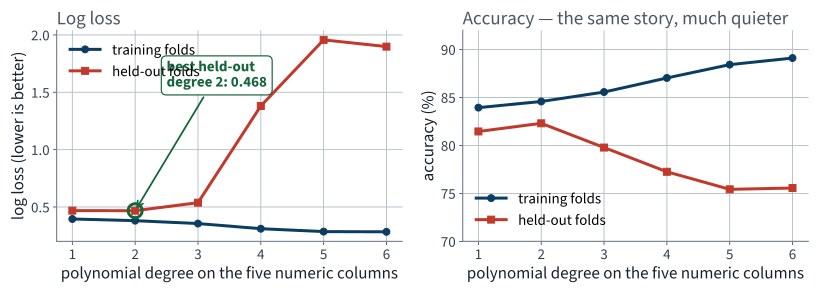
The training curve never stops improving. The held-out curve turns at degree 2 and then falls off a cliff.
From degree 2 to degree 5, held-out accuracy falls by about six points. Held-out log loss is multiplied by more than four.
The requirement was for probabilities. The metric that matches the requirement is the metric that saw the damage.
ConvergenceWarning: lbfgs failed to converge after 4000 iteration(s)
| Degree | 1 | 2 | 3 | 4 | 5 | 6 |
|---|---|---|---|---|---|---|
| Converged | yes | yes | yes | no | no | no |
| Iterations used | 74 | 256 | 935 | 4000 | 4000 | 4000 |
The reflex is to raise max_iter. It cannot help,
and understanding why is the point.
With 87 columns and 712 rows the two classes eventually become linearly separable. Suppose some $\boldsymbol\theta$ separates them perfectly, so $\boldsymbol\theta^{\intercal}\mathbf{x}^{(i)}$ has the right sign for every $i$. Then
The requirement, checked
The difference between a number that looks like a probability and one that is one
Take every passenger the model scored near $q$. The fraction who actually survived should be about $q$.
This is a property of a set of predictions, not of any one prediction. You cannot check it on a single passenger, which is exactly why it is so easy to ship a model that fails it.
p_oof = cross_val_predict(model, X_train, y_train, cv=cv,
method="predict_proba")[:, 1]
edges = np.linspace(0, 1, 11)
idx = np.clip(np.digitize(p_oof, edges) - 1, 0, 9)
for b in range(10):
sel = idx == b
print(f"predicted {p_oof[sel].mean():.3f} "
f"observed {y_train.values[sel].mean():.3f} n={sel.sum()}")
cross_val_predict, not predict:
every probability here came from a fit that had never seen that passenger. A
reliability diagram drawn on training predictions always looks excellent.
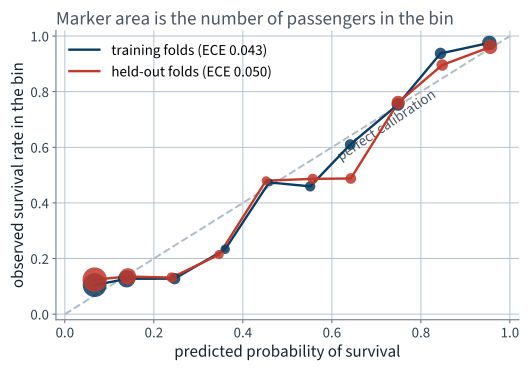
Close to the diagonal in the bins that hold most of the passengers — the two ends, where the model is confident.
.predict() is .predict_proba() >= 0.5.predict() silently applies a cut-off of 0.5, which is
cost-optimal only when the two mistakes cost the same. Nothing in the code
mentions 0.5. Nothing errors. The accuracy printed is true, and it answers a
question the stakeholder did not ask.
Lecture 3 chose an operating point against a stated constraint and defended it. The same discipline applies here, with one addition: the model produces the probability, and the cut-off is a separate decision taken on top of it.
Twenty splits. On each: fit, choose the cut-off on out-of-fold training predictions against a stated 10 : 1 cost ratio, then apply both cut-offs to the held-out passengers.
| Cut-off | Accuracy | Expected cost |
|---|---|---|
| 0.50 — the library default | 81.8% | 169 |
| 0.86 — chosen from the costs, per split | 74.1% | 59 |
The default cut-off costs 110 escort-units more per evacuation, on average — and it is worse on 20 splits out of 20.
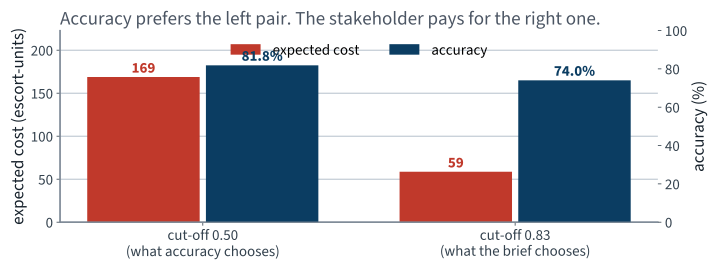
Accuracy goes down when you do the right thing. If accuracy is the headline you will reject the better rule.
For a calibrated model the cost-minimising cut-off is $t^{\ast} = c_{\text{FN}}/(c_{\text{FN}} + c_{\text{FP}})$ — 0.909 at a 10 : 1 ratio. Our measured optimum sits below it, and that gap is the calibration error, expressed in a unit somebody cares about.
Further ground
15 minutes · examinable
One parameter vector per class. Score each class, then normalise:
Every $\hat p_k > 0$ and they sum to 1 by construction, so the output is a distribution over the $K$ classes without any further work.
Multiclass, not multilabel: softmax assigns one class per instance. Four objects in one photograph need $K$ separate binary classifiers, not this.
$y_k^{(i)}$ is 1 if instance $i$ belongs to class $k$ and 0 otherwise, so the inner sum keeps exactly one term: the log of the probability given to the true class.
At $K = 2$ this is the log loss, term for term. Logistic regression is the two-class case of softmax, not a different model.
Error times feature, for the third time today.
That is not a coincidence. It is a property of this family of losses paired with these output functions, and it is the reason one optimiser fits all of them — including every network in the second half of this course.
Class $k$ is predicted where $s_k$ is the largest score, so the boundary between classes $j$ and $k$ is the set where
A hyperplane. The decision regions are convex polyhedra meeting along flat faces — the multiclass version of the straight line we drew on age and fare.
Which is also the limitation: a class that is not linearly separable from the union of the others cannot be carved out, however many iterations you run.
| Estimator | What it runs | Use it when |
|---|---|---|
LogisticRegression, lbfgs | quasi-Newton, batch | the default: the data fits in memory and $n$ is moderate |
LogisticRegression, saga | variance-reduced stochastic | many rows, or an $\ell_1$ penalty |
SGDClassifier(loss="log_loss") | mini-batch descent, explicitly | out-of-core data, or a learning schedule you want to control |
not examinable All three minimise the same convex cost and, given enough iterations, agree. The choice is engineering: which one gets there fastest on your data.
| Left open today | What it means | What fixes it |
|---|---|---|
| Rank 23 of 29 columns | the minimiser is not unique | a penalty makes it unique |
| lbfgs will not converge at degree 4 | the minimiser does not exist | a penalty makes it exist |
| Held-out log loss quadruples from degree 2 to degree 5 | capacity with no counterweight | a penalty buys most of it back |
| We chose the degree by reading the held-out score | a choice with no diagnosis behind it | learning and validation curves |
The first two are statements about the optimisation problem, not about the passengers.
One idea repairs all four, and it is the next lecture.
ETA_DIVERGE in the learning-rate cell and watch where the
cost first becomes inf. Then compute
$2/\lambda_{\max}$ for that design matrix and check the two agree.
01 · What machine learning is, and how we will work
03 · Classification and its metrics
05 · Regularisation and the bias–variance trade-off
07 · Ensembles and random forests
08 · Dimensionality reduction and unsupervised learning
09 · Neural networks, from the perceptron up
14 · Detection and segmentation
18 · Attention and transformers
19 · Information retrieval: the lexical foundation
20 · Information retrieval: dense retrieval
21 · Recommender systems: from ratings to factors
22 · Recommender systems: neural, and evaluated honestly
23 · Vision transformers and multimodal retrieval
24 · Generation, retrieval-augmented systems, and where this leaves you
.predict() is a cut-off nobody choseColumnTransformer and the pipeline
discipline, unchangedThe convergence bound $\eta < 2/\lambda_{\max}$ and the contraction factor $(\kappa-1)/(\kappa+1)$ go slightly beyond the book's treatment and are examinable as derived here. Convergence rates for non-convex costs are beyond the syllabus.
Not presented — for afterwards
five, in the style of the written paper
Solutions on Lecture 5’s deck.
Solutions on Lecture 5’s deck.
The five set at the end of Lecture 3
not part of this lecture
1. On the MNIST 5-detector, a classifier that never fires scores $90.96\%$ accuracy on the training set. State…
The share of the data that is not a 5.
2. Prove or disprove: as the decision threshold is lowered, precision increases monotonically.
Disprove — precision is not monotone in the threshold.
3. A client asks for “90% precision”. Explain why that is not yet a specification, and give the one…
It names no recall, and precision alone is met by predicting almost nothing. Add the recall it must hold at.
4. Two models have the same ROC AUC. One is far better on a precision–recall curve. What does that tell…
The positive class is rare.
5. The confusion matrix of the never-fires classifier has two zero cells. Name them, and say which single metric…
True positives and false positives are zero; recall exposes it, at 0.0.
Next lecture
Why the held-out curve turned upward at degree 3, decomposed into three terms — and the one line that repairs both of today's failures